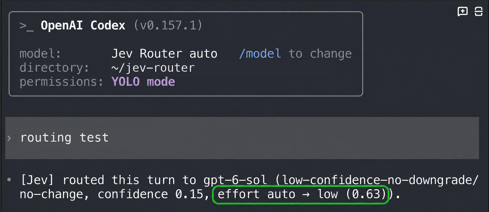

Choose the model. Choose its effort. Keep working.
Jev Router runs inside the coding CLI you already use. On each user turn it asks Jev for a recommendation, checks the models your signed-in account actually offers, and selects the final model and reasoning effort.
Model per turnEffort per turnManual overrideA routing decision, on screen
OpenAI Codex
The decision line reports gpt-6-sol and effort auto → low (0.63). The green outline highlights the effort field. The separate confidence 0.15 belongs to the model-routing decision.

The image demonstrates a displayed decision. It does not benchmark speed or measure answer quality. 0.63 is an effort-selection score, not a speedup.
The router goes first
Instead of rewriting the request with a separate model before the working model sees it, the router makes one small decision and the working model receives the original request.
The router adds one routing request per turn. It does not remove network latency or guarantee a faster response.
What automatic routing does not do
Jev recommends a tier; this project applies policy, checks the account's model catalog and picks the final model and effort. You can still pick a model yourself, and doing so pauses automatic routing.
Each routing decision sends the prompt and related task context to TypeSafe's Jev API. Provider terms for API keys and personal-account sign-in differ; you are responsible for complying with them.
Setup and technical details →